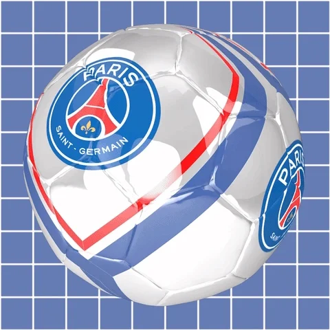

Le football est un sport collectif joué entre deux équipes de 11 joueurs sur un terrain de 100 à 110 mètres de long et 64 à 75 mètres de large. L'objectif est de marquer des buts en envoyant un ballon dans le but adverse, en utilisant uniquement les pieds, à l'exception du gardien de but qui peut utiliser ses mains dans sa surface.
Les règles du football sont simples, mais l'exécution demande technique, rapidité, et travail d'équipe. Chaque joueur a un rôle précis : défenseur, milieu de terrain, attaquant, et bien sûr le gardien. La coordination entre les joueurs est essentielle pour réussir à marquer des buts tout en empêchant l'adversaire de faire de même.
| Les Gants du Gardien | Gants spéciaux pour protéger les mains et améliorer la prise du ballon | |
| Le Ballon | Poids entre 410 et 450g, diamètre de 68 à 70 cm |  |
| Les Chaussures | Chaussures à crampons pour une meilleure adhérence sur le terrain |